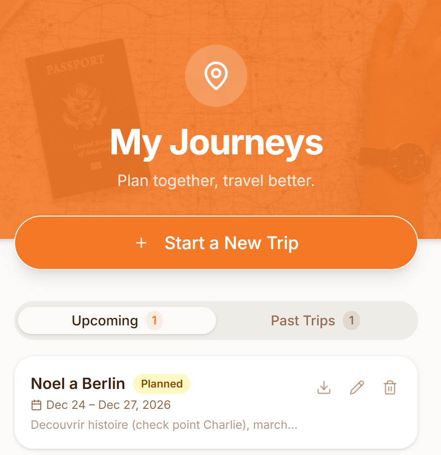
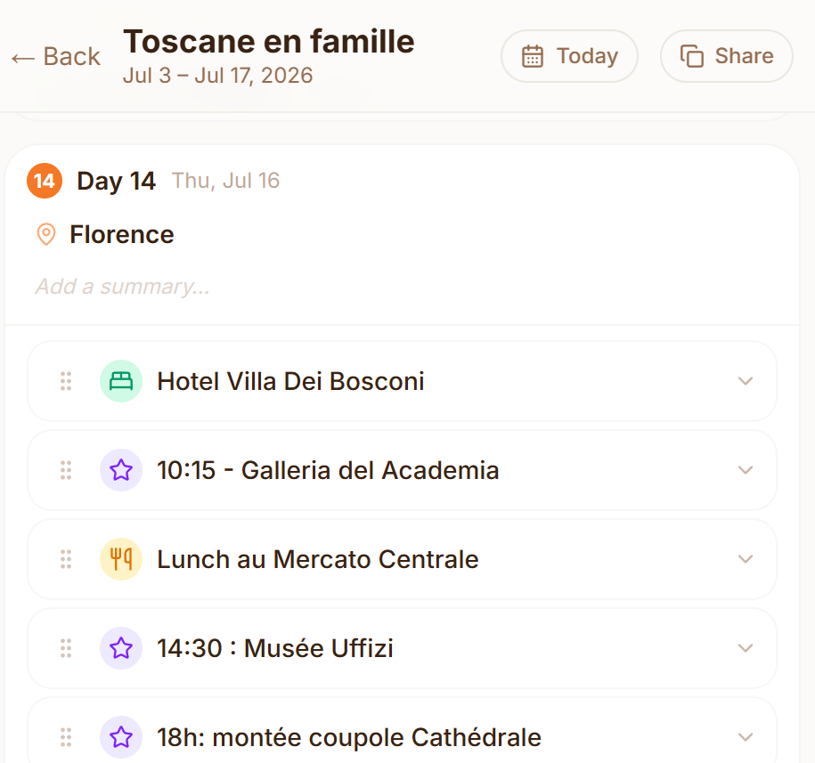
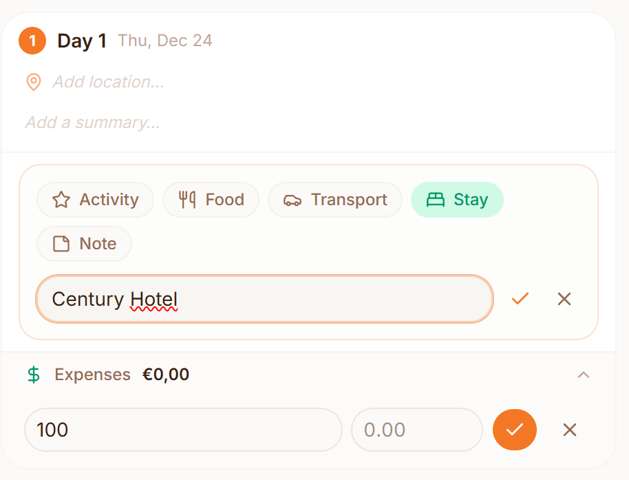

How I used AI and Replit to go from an idea to a functional MVP — and what I learned about building fast.
I wanted to see how far I could go from an idea to a functional app using AI, without starting with traditional software development skills.
I had an idea for a Travel Planner that could help organize a trip in a more flexible and visual way. Instead of learning programming for months before building anything, I wanted to experiment with tools such as Replit and use AI as a partner along the way.
My goal was not to build a perfect product. It was to see how quickly I could turn an idea into something real, test it with people, and learn from the experience.
This was my first real experiment with what is often called vibe coding: describing what I want to build in natural language and using AI to help turn those ideas into working code.

I started with a simple idea and used Replit as my development environment. Replit allowed me to create and run the application directly in the browser, while AI helped me write and modify the code.
I quickly discovered that I didn't need to know every technical detail before starting. I could describe what I wanted, see the result, and learn from the changes.
ChatGPT became my coach. I used it not only to generate ideas or code, but also to help me understand technical concepts, improve my prompts and interpret what Replit was doing.
I gradually moved from a simple idea to a Minimum Viable Product (MVP) — the smallest version of a product that is useful enough to test with real users.

The MVP was not just a visual prototype. I could actually create and modify a trip, add activities, accommodation, food and transport, and track expenses along the way.

It was very tempting to keep adding features. AI makes this particularly easy: if you can describe a feature, you can often get a first version of it very quickly.
But I learned that building more does not necessarily mean building better.
For an MVP, I needed to focus on the essential experience and resist the temptation to solve problems that did not really matter yet.
Once I had something functional, I tested it with real users.
Their feedback was extremely useful. Some things I thought were obvious were not. Some features I considered important were not that useful.
This created a simple loop:
Build → Test → Learn → Improve
When AI can produce code very quickly, it becomes easy to ask for more than you actually need.
A simple problem can turn into a complex technical solution. This is one form of overengineering.
I had to learn to ask myself:
"Do I really need this now?"
Tools like Replit combined with AI dramatically reduce the technical barrier to building software.
I don't need to understand everything before starting. I can learn while building and ask questions when I get stuck.
My most useful use of ChatGPT was not always generating code.
It helped me think, formulate, translate technical language and understand what the coding agent was doing.
I learned that an MVP has a different purpose: to learn whether the core idea works.
Less can actually be better.
The application is not finished when the code works.
Real users provide information that neither I nor the AI can fully anticipate.
The AI can help me build what I ask for. Users help me understand what I should actually build.
When building software required much more technical effort, the ability to build was often the bottleneck.
With AI, that bottleneck is moving.
The difficult questions increasingly become:
What should I build? What should I not build? And when should I stop?